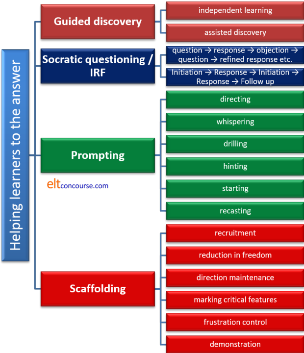

Scaffolding, the ZPD and Vygotsky
 |
The term scaffolding is now used so loosely in English Language
Teaching that it is beginning to lose any proper meaning at all.
This guide attempts to get at what it should mean and how it
differs from helping, supporting, guiding and discovery learning.
It is not often noted that Vygotsky never used the term
scaffolding at all. That term was introduced long after Vygotsky's
death (1934) by Jerome Bruner in around 1967 to describe the process of
carefully chosen levels of support which allow the learner to carry on
with a task and which is judiciously reduced as the learner progresses.
The Zone of Proximal Development |
This is the key term, without which we cannot distinguish exactly what scaffolding is and how it differs from merely helping learners along the path to learning.
Lev Vygotsky, 1836 – 1934, (1962 [originally published in the
1930s]) posited the Zone of Proximal Development
or the ZPD.
Briefly explained, it is the learning zone in which the learner can
achieve the task with input
from someone who knows more (you). That person is described as
a More Knowledgeable Other or MKO and need not, in fact, be a person
at all: it can be a book, a worksheet or any other kind of resource
(such as the one you are reading). The ZPD lies between tasks which the
learner can already do without help (so won't learn much) and tasks
which the learner cannot even attempt (so won't learn much). If
the task is too easy, the learner will get bored. If it's too hard
the learner will become anxious and frustrated.
The zone is referred to proximal because it concerns the skills or
knowledge that a learner is close to mastering.
 |
An example from sport |
This example is from McLeod (2012):
Maria just entered college this semester and
decided to take an introductory tennis course. Her class spends each
week learning and practicing a different shot. Weeks go by, and they
learn how to properly serve and hit a backhand.
During the week of learning the forehand, the instructor notices that
Maria is very frustrated because she keeps hitting her forehand shots
either into the net or far past the baseline. He examines her
preparation and swing. He notices that her stance is perfect, she
prepares early, she turns her torso appropriately, and she hits the ball
at precisely the right height.
However, he notices that she is still gripping her racquet the same way
she hits her backhand, so he goes over to her and shows her how to
reposition her hand to hit a proper forehand, stressing that she should
keep her index finger parallel to the racquet. He models a good forehand
for her, and then assists her in changing her grip. With a little
practice, Maria's forehand turns into a formidable weapon for her!
In this case, Maria was in the zone of proximal development for
successfully hitting a forehand shot. She was doing everything else
correctly, but just needed a little coaching and scaffolding from a
"More Knowledgeable Other" to help her succeed in this task.
When that assistance was given, she became able to achieve her goal.
Provided with appropriate support at the right moments, so too will
students in classrooms be able to achieve tasks that would otherwise be
too difficult for them.
 |
An example from the language classroom |
And here's an example (from a real lesson) of how the same phenomenon may function in the English language classroom:
André is quite an advanced learner getting close to C1 level
on the CEF and he has produced the following in class:
I think Pierre isn't coming
The teacher notices that André has used a natural contraction,
the utterance is appropriate in terms of style and relevance to what has
come before, the individual phonemes (including the tricky, for André,
/θ/ sound) are mostly correctly produced and it sounds close to the
standard form:
/aɪ.ˈθɪŋk.pi.ˈer.ˈɪznt.ˈkʌm.ɪŋ/
Even the stress patterns and overall intonation contour on what's been
said are correct (within tolerance).
However, what he has said still doesn't sound English and the teacher
knows why: transferred negation.
So, the teacher, being alert to the small amount of help that André
needs, prompts like this:
In English, we
usually make verbs like believe,
suppose, fancy, imagine, reckon, expect negative and leave
the rest of the sentence positive. We start with
I don't ... in this case. (She
then writes an example on the board.)
Try
again.
And, André, a trusting soul, produces:
I don't think
Pierre's coming.
perfectly acceptably.
Later, of course the teacher will have to insert the information that we
do not do this with all verbs of thinking or perception such as
hope and
assume and the fact that
there is sometimes a difference in meaning between the ways of
constructing the clause. However, for the moment, André has learnt
a useful rule which will make what he says sound more natural.
In the jargon, his interlanguage has moved another small step towards
mastery.
In both these examples, the teacher / trainer has noticed and been alert to exactly what help is needed and when it should be supplied. That is being sensitive to learners' Zones of Proximal Development and scaffolding their learning.
The ZPD can be visualised like this:

The tricks, of course, are
- To design tasks which are situated in the red zone.
- To be alert to how much help a learner needs to improve in an incremental fashion.
- Choosing materials which do not stray too far (if at all) outside the red zone.
- Designing practice materials which are firmly within the red zone.
The scaffolding that takes place in the ZPD need not come from the teacher. It can come from peers who simply happen to know a little more.
Now we need to look at what scaffolding is not.
 |
Scaffolding vs. Discovery Learning / Guided discovery |
These are allied concepts but not (in this analysis) synonyms.
Discovery learning comes in two flavours:
- Independent discovery learning:
This, as the name implies, is learning by doing tasks independently of any instruction (other than task setting before the activity and feedback after it).
For example:
The teacher sets a reading task which involves the learners accessing a text to identify long noun phrases acting as subjects of verbs. In this text, for example, the learners are asked to identify phrases such as:
The amount of difficulty this policy has given the minister means that ...
in which the long noun phrase can be replaced simply with the difficulty.
and
That the newspapers have taken a negative view of what the minister said should not ...
in which we have a nominalised that-clause acting as the subject of should.
The phrases are not underlined in the text the students work with.
The object of the exercise is to alert the learners to how this kind of complex nominalisation functions in English in the hope that they may be able to transfer some of the strategies to their own writing.
At the end of the task, learners compare what they have identified in small groups and then there is some kind of whole-class feedback and presentation. - Assisted discovery learning:
This is what most people think of as Guided discovery.
In this example, the learners are given a text like this:This week, I decided to organise the books in my small library. Over the years it has become more and more difficult for me to find what I am looking for because I have put the books on the shelf pretty much at random. At the beginning, I just took all the books down and piled them up on the floor. After that, I found all the history books and put them on one side in alphabetical order of titles. Having done that, I started on the novels and put them in order of the authors' names. And so on. By the end of the afternoon, I had everything where I wanted it and now I can find things.
The learners' task was to work together and classify the preposition-phrase and other adverbials into those which express time, those expressing place and those referring to manner.
This is an assisted task because three things have happened:- The learners have been assisted by the underlining of the targets.
- They learners are collaborating and helping each other.
- There is a clear categorising task to accomplish which is language based.
The temptation you will find in many references is to suggest
that assisted discovery learning is the same as scaffolding and it
is an understandable confusion because it is certainly closer to
real scaffolding than independent discovery learning.
Nevertheless, it is not true scaffolding because there is no
evidence that the task lies within the learners ZPD or that they
could not do the task without the assistance provided by
underlining. There is also no evidence that the learners can
do the task at all because the concepts the phrases express are
somewhat blurred at the edges.
It could easily become a proper scaffolding event if the teacher,
during feedback, focuses only on the small extra details and help
that the class needs to complete the task successfully. As it
stands, however, it is assistance, not scaffolding.
There is mounting evidence, at least in the area of teaching children, incidentally, that assisted discovery work is generally more effective in terms of learning and retention than independent work.
 |
Scaffolding vs. Socratic (leading) questioning and IRF sequences |
The process of elicitation through leading questions is another
routine often described as scaffolding and, again, it is closely
related but not quite the same thing.
This sort of questioning to lead a learner to the truth (or
something near it) is sometimes called Socratic questioning and is a
very ancient technique. Socratic questioning works on a cycle
of question → response →
objection → question → refined response → objection → question →
refined response and so on.
Here's an example from Ellis (although he doesn't call this Socratic questioning):
Teacher: I want you to tell me what you can
see in the picture or what’s wrong with the picture.
Learner: A /paik/ (= bike)
Teacher: A cycle, yes. But what’s wrong?
Learner: /ret/ (= red)
Teacher: It’s red yes. What’s wrong with it?
Learner: Black
Teacher: Black. Good. Black what?
Learner: Black /taes/ (= tyres)
(Ellis, 2003, p. 181)
What is actually happening here is not really scaffolding
(although it is obviously an attempt to help and lead the learners
to the 'right' answer, whatever that is).
All this really is is what many teachers do in the classroom
repeatedly and is an example of what is called a classroom IRF
sequence (Initiation → Response → Follow-up) and
is not even a very good example of that.
In fact, an IRF sequence is often used as a Socratic method when it
consists of:
Initiation → Response →
Initiation → Response → Initiation → Response → Follow-up evaluation.
For example (teacher's utterances
in black):
Initiation: What can you see, Mario?
Response: I can see a policeman.
Response: OK.
Initiation: What's he doing?
Response: He's talking.
Response. I see.
Initiation: Who's he talking to?
Response: A shopkeeper
Response: I see.
Initiation: Now, listen: You can see a policeman who is talking to a
shopkeeper. Can you make a sentence like that?
Response: I can see a policeman and who is talk to a shopkeeper
Initiation: Try again. You don't
need and and get the verb form right.
Response: I can see a policeman, err, who is talking to a
shopkeeper.
Follow up: Great, well done. That's
good.
Although this is an example of supporting a learner and guiding to the correct answer, it is not scaffolding. Scaffolding refers to more than leading learners to the right answer by elicitation because the latter often results in random guessing until the learner hits on what it is that the teacher wants to hear.
 |
Scaffolding vs. Prompting |
Scaffolding proper is also not the same as prompting learners
with the right answer or a clue to where to find it.
There is little doubt that prompting can be helpful and lead
learners to discover the right answer for themselves but it differs
from scaffolding insofar as the object is not to teach but to
provide the learner with some data to use now, rather than extend
their interlanguage into new areas permanently.
Prompting can take a number of forms, none of them differs from helping or nudging rather than scaffolding:
- directing
- This is merely telling learners a short-cut way to finding
the answer they need. For example:
Look in the last paragraph for the answer.
Look at the word abstain. What's its preposition?
Is this word followed by a noun?
etc.
Direction can aid discovery but it's not scaffolding. - whispering
- This is often done while monitoring or watching a role play.
It involves a more or less theatrical sotto voce prompt
routine such as whispering:
Past tense
Damage not break
You need an object
etc. - drilling
- Prompting often forms part of a drilling sequence as in, for
example:
Teacher: I saw Petra today (haven't ... years)
Learners: I haven't seen her for years.
etc. - hinting
- When learners are searching for words an oft-used technique
is to give them the opening sound of the item (because there is
some evidence that opening sound and the word itself are stored
together in the brain). For example:
Learner: I ate in the, erm ...
Teacher: /k/, /k/, /k/
Learner: Canteen!
Teacher: Well done. - starting
- Another frequently used technique is for the teacher to
provide the beginning of what the learner is meant to produce so
that she / he can complete the clause as in, for example:
Learner: I go to the market on Sunday
Teacher: I went ...
Learner: I went to the market on Sunday
or
Teacher: He wasn't there on time because the bus was ...
Learner(s): Delayed
Teacher: Right! - recasting
- This involves the teacher repeating the learner's utterance
but altering it to conform to the rules of the language.
For example:
Learner: I have saw him
Teacher: Oh, you have seen him
Learner: Yes, I have seen him
None of these techniques is being disparaged here because they can all be efficacious in extracting language from learners or correcting their production. What they are not, however, is scaffolding.
 |
Scaffolding and Dogme |
It is slightly concerning and slightly interesting that one of
the originators of a Dogme approach to teaching, Scott Thornbury,
does not mention scaffolding anywhere in his definition of the Dogme
approach and, incidentally, manages not to mention Dogme, Vygotsky
or the ZPD in his article on scaffolding itself.
However, in one article, the following appears:
Learning can be mediated through talk,
especially talk that is shaped and supported (i.e. scaffolded)
by the teacher.
Thornbury 2005:1
The key here is shaped,
not just supported.
Too often Dogme lessons, while being undeniably communicative and
focused on the language and language needs that emerge from the
learners, fail to take the learners forward in any meaningful sense.
For scaffolding to be effective in such lessons, the language which
emerges must be refined and shaped, not just practised.
Otherwise a Dogme lesson is akin to what used to be termed
'conversation hours' in which a teacher, usually undertrained and
under-supported, would lead a chat about topics of interest to the
learners who then practised what they already knew without making
any discernible progress.
Well conducted by an experienced and sensitive teacher, Dogme is just the environment in which scaffolding should happen, of course. As Thornbury points out:
The teacher's primary function, apart from
promoting the kind of classroom dynamic which is conducive to a
dialogic and emergent pedagogy, is to optimise language learning
affordances, by, for example, directing attention to features of the
emergent language.
(Ibid)
The term affordance needs defining. It refers to the possibilities you see in the environment around you. For example, if you see a plant pot, you may note that its main affordance is a container to keep plants in but it could also be used as a doorstop, a paperweight and a number of other things. All these are affordances. Language learning affordances are, then, the usabilities that the learner perceives in the language he or she is exposed to.
Scaffolding, properly understood, however, is more than
directing attention.
It needs to go on from there to focus on extending and refining
learners' output. That is perfectly doable in a Dogme lesson,
indeed, it is a primary aim of a Dogme lesson,
but only if the teacher is aware of how to scaffold rather than
simply supply, correct and direct attention.
Well run, Dogme includes but is not limited to scaffolding.
There is a little more on Dogme in the guide linked at the end.
So, what is scaffolding? |
Now we are rid of what scaffolding is not, we can look at the
characteristics of the technique. The following is based
on Wood, Bruner and Ross, 1976:98, who set out six
characteristics of effective classroom scaffolding. Citations
within the following are in black.
It should remembered, however, that their study was concerned with
how scaffolding worked in teaching:
children aged 3, 4 and 5 yr to build a
particular three-dimensional structure that requires a degree of
skill that is initially beyond them. It is the usual type of
tutoring situation in which one member "knows the answer" and the
other does not, rather like a "practical" in which only the
instructor "knows how".
(Op cit. p89)
so not all of it may be relevant to teaching languages
(especially to adults) and not all the characteristics that they
identify need always be present.
The six are:
- Recruitment

This involves getting learners to understand and adhere to what is needed as well as raising their interest in doing any kind of task.
It may, for example, involve the teacher making it clear that polishing and improving their production will make them more effective speakers or writers in English or convincing them that the target item is worth learning. A Test–Teach–Test approach may do that. of course, by raising the learners' awareness of what they should be able to do. - Reduction in degrees of freedom

This involves simplifying the task by reducing the number of constituent acts required to reach a solution
As we saw above, with the examples of transferred negation and a tennis forehand, the learners had already mastered many of the skills and needed only to focus on something instantly achievable. In the writers' words:
it involved reducing the size of the task to the level where the learner could recognize whether or not he had achieved a "fit" with task requirements. - Direction maintenance

The tutor has the role of keeping them in pursuit of a particular objective. Partly it involves keeping the child "in the field" and partly deployment of zest and sympathy to keep him motivated.
In a language classroom, this will be most relevant to longer and more complex tasks in which it is easy for learners to become distracted and sidetracked. Part of scaffolding an activity is to make sure this doesn't happen.
Action, of course, tends to follow the line of previous success.
In other words, chopping a task into achievable (with a little help) sections encourages the learners to stay focused and motivated. - Marking critical features

A tutor ... provides information about the discrepancy between what the child has produced and what he would recognize as a correct production.
This is, in the language classroom a matter of what is called noticing the gap. There is a guide to noticing on this site, linked below. Here, the learners need to be alert (or directed towards) the differences between a model and their own production. - Frustration control

The key is that the teacher's assistance should make the acquisition of the target language or skill less, not more, stressful than working alone or simply being told the right answer. In other words, it involves sensitive support rather than criticism and overt correction.
The authors, however, caution that:
The major risk is in creating too much dependency on the tutor.
so we need to be sensitive to not allowing the task to wander to the right of the ZPD and become frustrating and demotivating. - Demonstration

This is more than a monkey-see-monkey-do approach. That's simply modelling and it has its place in the classroom, but not here.
It involves considerably more than simply performing.
It may also involve presenting an idealised version of the language you want the learners to acquire (for example, exaggerated intonation patterns or vowel lengthening).
It may also involve, for example, demonstrating part of a task but not all of it, in order to make the task doable at all.
 |
Summary: Helping learners to the answer |
Here's a summary of the ways to help learners to the answer and, as you see, they are not all to do with scaffolding although they are all forms of support.

 |
Why use scaffolding in particular? |
- Scaffolding is not just helping and supporting. It is a targeted process aimed at exploiting the learners' Zone of Proximal Development to extend and improve their interlanguage and skills development. It does help, but it does much more.
- Scaffolding not only produces
immediate results, but also instills the skills necessary for
independent problem solving in the future.
McLeod 2012
This is a key point because successful scaffolding results in increasing learner independence as tasks become less challenging and more immediately doable (with a small amount of assistance). - Scaffolding is not the teacher's preserve. Scaffolding
can support learner differentiation policies in the classroom.
Mixed ability groups are the norm not the exception and getting
learners to collaborate and peer teach is an effective way of
overcoming the disadvantages of heterogeneous groups.
Peer teaching has to be set up carefully, however, to make sure that both 'teacher' and learner are operating just inside their respective ZPDs. - Scaffolding can be achieved in a number of ways, through demonstration, hinting, information giving, drilling or simply clever task design. No single strategy will always be effective for all targets.
- Scaffolding is only effective within the ZPD. Straying outside it is wasting your and your learners' time.
- Scaffolding is an opportunity for learning. It is not merely imitation or practice.
- Scaffolding is not a one-off event like drilling, correcting or modelling. It is an ongoing process in the sensitive teacher's classroom.
- Scaffolding is a metaphor. When each stage of the construction is completed, the scaffolding is dismantled until the building can stand alone.
- Finally:
Control those elements of the task that are initially beyond the learner's capacity, thus permitting him to concentrate upon and complete only those elements that are within his range of competence. The task thus proceeds to a successful conclusion.
Wood, Bruner and Ross op cit. p90
and a successful conclusion is just what we need.
| Related guides: | |
| feedback | for more on feedback to and from learners |
| Dogme | for the section of the guide to some alternative methodologies concerning Dogme |
| noticing | for a fuller guide to this area of classroom technique |
| monitoring | for a guide to when scaffolding is appropriately used |
| unlocking learning | this is a guide in the Delta section which considers scaffolding and much else |
| grouping learners | for a simple guide to grouping learners for different task types |
| types of task | for a consideration of how task types can be analysed |
| Bloom's taxonomy | this is a way of classifying the cognitive demands (i.e., level of challenge) that one places on learners |
| activity types | for a consideration of what activities are actually for |
References:
Ellis, R, 2003, Task-based Language Learning and Teaching,
Oxford: Oxford University Press
McLeod, SA, 2012, Zone of proximal development, retrieved from www.simplypsychology.org/Zone-of-Proximal-Development.html
Thornbury, S, 2005, Dogme: Dancing in the dark?, Folio 9/2
Conference Perspectives, retrieved from http://nebula.wsimg.com, linked
from http://www.scottthornbury.com/articles.html
Thornbury, S, 2010, S is for Scaffolding, retrieved from:
https://scottthornbury.wordpress.com/2010/04/04/s-is-for-scaffolding/
Vygotsky, L, 1962, Thought and Language, Cambridge, MA: MIT
Press
Wood, D, Bruner, J and Ross, G, 1976, The role of Tutoring in
Problem Solving, Journal of Child Psychology and Psychiatry, Vol.
17, 1976, pp. 89 to 100, Pergamon Press